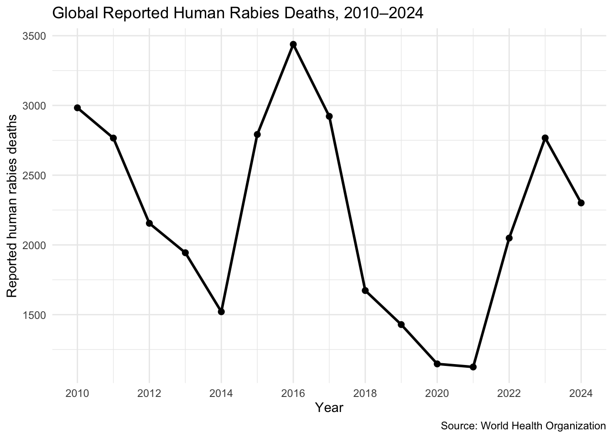
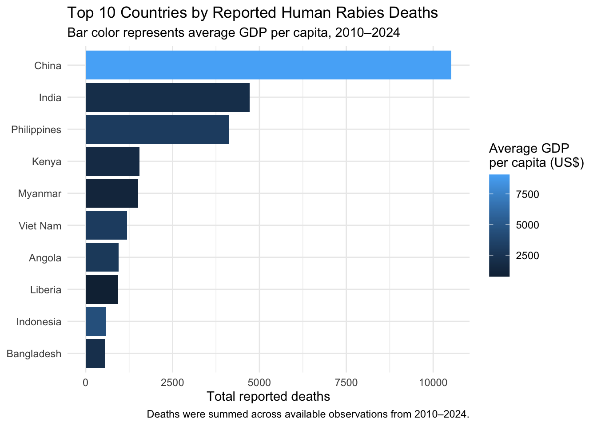
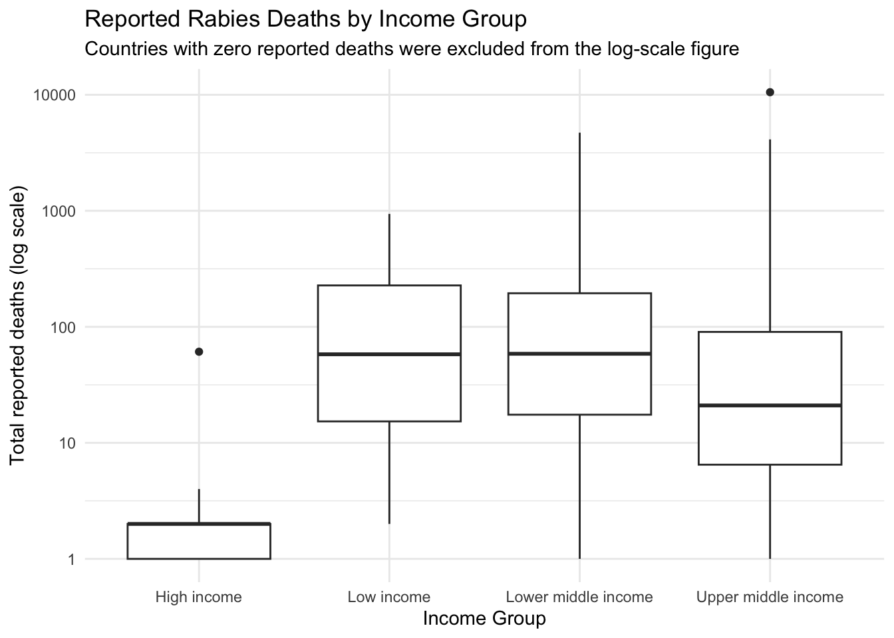

Global Patterns in Reported Human Rabies Deaths (2010–2024)
Introduction
Rabies is a zoonotic viral disease caused by the rabies virus (RV). RV is a negative sense single stranded RNA virus of the rhabdovirus family that primarily infects the central nervous system of mammals. Rabies, when contracted and once clinical symptoms develop, is almost universally fatal. Rabies can be transmitted through several routes, although bites from infected animals are by far the most common mode of transmission. Following a bite, virus-containing saliva enters the victim’s skeletal muscle, where viral replication begins. The virus then enters motor neurons through neuromuscular junctions and travels between neurons via synaptic connections until it reaches the central nervous system (CNS). The mechanism by which RV crosses the synaptic cleft remains unknown. The RV will slowly continue this process of jumping synaptic clefts until it reaches the brain. Once it reaches the brain, it spreads throughout the peripheral nervous system as well as the autonomic nervous system, causing many organs to become affected. During this late stage of infection, RV also migrates to the salivary glands where it is prepared for transmission to the next host.(Dietzschold et al., 2008)
Despite the high fatality rate associated with symptomatic rabies, timely post-exposure prophylaxis is highly effective at preventing disease. Passive antibody therapy with anti-rabies immune globulins (RIG) is used following suspected exposure to RV. Administration of rabies immune globulin (RIG) following exposure has reduced mortality to nearly zero when combined with appropriate vaccination before symptom onset.Experimental research in mice has also demonstrated improved protection against lethal rabies infection when anti-rabies antibody treatment was combined with vaccination (Terryn et al., 2016). Despite the availability of effective vaccines and rabies immune globulin, thousands of people continue to die from rabies each year, particularly in low- and middle-income countries where access to healthcare and vaccination programs may be limited. Most human rabies deaths worldwide result from bites by infected domestic dogs, making rabies not only a medical issue but also a veterinary and public health challenge.Historical surveillance research in the United States has documented substantial changes in human rabies deaths and animal exposures, demonstrating the importance of rabies prevention and public health surveillance (Pieracci et al., 2019).
The objective of this study is to analyze global rabies surveillance data to identify countries with the highest burden of reported human rabies deaths, evaluate temporal trends in rabies mortality, and examine whether economic status and geographic region are associated with disease burden. Understanding these relationships may help identify populations at increased risk and highlight opportunities for improved rabies prevention and control efforts.
This analysis uses publicly available surveillance data reported by the World Health Organization (WHO). The dataset includes annual reported human rabies deaths from multiple countries over several years, allowing comparisons of disease burden across geographic regions and economic groups.
Data
The data used in this analysis were obtained from the World Health Organization (World Health Organization, n.d.). The data set contains human rabies surveillance data from multiple countries between 2010 and 2024. Variables include country, continent, reported human rabies deaths, and year. Additional economic indicators, including gross domestic product(GDP per capita in USD), were obtained from the World Bank Open Data database(World Bank, n.d.). and merged with the WHO data set using country and year as common identifiers. Combining epidemiological and economic data provides an opportunity to compare the global burden of rabies across geographic regions and evaluate the relationship between economic development and rabies mortality over time.
Load Packages
library(readr)library(dplyr)
Attaching package: 'dplyr'
The following objects are masked from 'package:stats':
filter, lag
The following objects are masked from 'package:base':
intersect, setdiff, setequal, union
library(tidyr)library(ggplot2)
Import data
rabies_data<-read_csv("data/data.csv")
Rows: 2919 Columns: 34
── Column specification ────────────────────────────────────────────────────────
Delimiter: ","
chr (11): IndicatorCode, Indicator, ValueType, ParentLocationCode, ParentLo...
dbl (3): Period, FactValueNumeric, FactValueTranslationID
lgl (19): IsLatestYear, Dim1 type, Dim1, Dim1ValueCode, Dim2 type, Dim2, Di...
dttm (1): DateModified
ℹ Use `spec()` to retrieve the full column specification for this data.
ℹ Specify the column types or set `show_col_types = FALSE` to quiet this message.
gdp <-read_csv("data/API_NY.GDP.PCAP.CD_DS2_en_csv_v2_33610.csv",skip =4 )
New names:
Rows: 265 Columns: 71
── Column specification
──────────────────────────────────────────────────────── Delimiter: "," chr
(4): Country Name, Country Code, Indicator Name, Indicator Code dbl (66): 1960,
1961, 1962, 1963, 1964, 1965, 1966, 1967, 1968, 1969, 1970, ... lgl (1): ...71
ℹ Use `spec()` to retrieve the full column specification for this data. ℹ
Specify the column types or set `show_col_types = FALSE` to quiet this message.
• `` -> `...71`
New names:
Rows: 264 Columns: 6
── Column specification
──────────────────────────────────────────────────────── Delimiter: "," chr
(5): Country Code, Region, IncomeGroup, SpecialNotes, TableName lgl (1): ...6
ℹ Use `spec()` to retrieve the full column specification for this data. ℹ
Specify the column types or set `show_col_types = FALSE` to quiet this message.
• `` -> `...6`
Clean Rabies Data
#make the rabies data smallerrabies_data_clean <- rabies_data %>%select(ParentLocation, Location, Period, Value)rabies_data_clean<- rabies_data_clean %>%filter (Value !="No data")#rename our columns so they match other data setsnames(rabies_data_clean) <-c("Location","Country","Year","Deaths" )
Clean GDP Data
#find the time span we are looking for and rename columnsgdp_clean <- gdp |>select(country =`Country Name`,country_code =`Country Code`,`2010`:`2024` )#tidy data so that years are now represented in rows not columns gdp_clean <- gdp_clean |>pivot_longer(cols =`2010`:`2024`,names_to ="year",values_to ="GDP per capita" )#rename our columns so they match other data setsnames(gdp_clean) <-c("Country","Country code","Year","GDP per capita" )#turn or year rows in numeric format so they match other data sets gdp_clean <- gdp_clean |>mutate(Year =as.numeric(Year))
#merge Rabies data and GDP data rabies_gdp <-left_join( rabies_data_clean, gdp_clean,by =c("Country","Year") )#merge our metadata with our rabies and GDP datarabies_gdp <-left_join( rabies_gdp, Country_metadata,by =c("Country") )#make sure our numbers are numericrabies_gdp <- rabies_gdp |>mutate(Deaths =as.numeric(Deaths) )
Results
Figure 1:
#summarize our data into one tablerabies_yearly <- rabies_gdp |>group_by(Year) |>summarize(Total_Deaths =sum(Deaths, na.rm =TRUE) )#plot global deaths per yearggplot( rabies_yearly,aes(x = Year, y = Total_Deaths)) +geom_line(linewidth =1) +geom_point(size =2) +scale_x_continuous(breaks =seq(2010, 2024, by =2) ) +labs(title ="Global Reported Human Rabies Deaths, 2010–2024",x ="Year",y ="Reported human rabies deaths",caption ="Source: World Health Organization" ) +theme_minimal()

Figure 1 shows the total number of reported human rabies deaths globally between 2010 and 2024. The data demonstrate substantial year to year variation, with notable peaks in 2010, 2016, and 2023 and lower reported mortality during several intervening years. A pronounced decline in reported deaths occurred around 2020–2021, followed by a sharp increase by 2023. However, this pattern should be interpreted cautiously because the number of countries reporting rabies surveillance data also declined after 2020. Prior to 2020, more than 100 countries reported rabies mortality data in many years, whereas reporting coverage decreased steadily in subsequent years. Despite the smaller number of reporting countries, reported deaths in later years returned to levels comparable with earlier periods such as 2010 and 2011. This suggests that changes in surveillance completeness may have influenced the apparent temporal pattern in reported global rabies mortality.
Figure 2:
#get the top 10top10 <- rabies_gdp |>group_by(Country) |>summarize(Total_Deaths =sum(Deaths, na.rm =TRUE),GDP_per_capita =mean(`GDP per capita`, na.rm =TRUE),.groups ="drop" ) |>arrange(desc(Total_Deaths)) |>slice_head(n =10)#graph top 10ggplot( top10,aes(x =reorder(Country, Total_Deaths),y = Total_Deaths,fill = GDP_per_capita )) +geom_col() +coord_flip() +labs(title ="Top 10 Countries by Reported Human Rabies Deaths",subtitle ="Bar color represents average GDP per capita, 2010–2024",x =NULL,y ="Total reported deaths",fill ="Average GDP\nper capita (US$)",caption ="Deaths were summed across available observations from 2010–2024." ) +theme_minimal()

Figure 2 shows the 10 countries with the highest cumulative number of reported human rabies deaths between 2010 and 2024. Bar color represents the average GDP per capita for each country during the same period. Most countries with the highest reported rabies mortality had relatively low average GDP per capita, suggesting an inverse relationship between economic development and reported rabies deaths. China was a notable exception, exhibiting both the highest cumulative number of reported rabies deaths and a substantially higher GDP per capita than the other countries in the top 10.
Figure 3:
#summarize all countries country_summary <- rabies_gdp |>group_by(Country) |>summarize(Total_Deaths =sum(Deaths, na.rm =TRUE),GDP_per_capita =mean(`GDP per capita`, na.rm =TRUE),.groups ="drop" )country_summary_plot <- country_summary |>filter( Total_Deaths >0, GDP_per_capita >0,is.finite(GDP_per_capita) )#graph relation between GDP per capita and rabies deathsggplot( country_summary_plot,aes(x = GDP_per_capita,y = Total_Deaths )) +geom_point(size =2, alpha =0.5) +geom_smooth(method ="lm", color ="red") +scale_x_log10() +scale_y_log10() +labs(title ="Relationship Between GDP per Capita and Human Rabies Deaths",subtitle ="Countries with zero reported deaths were excluded from the log-scale figure",x ="Average GDP per capita (current US$, log scale)",y ="Total reported human rabies deaths (log scale)" ) +theme_minimal()
Spearman's rank correlation rho
data: country_summary_plot$GDP_per_capita and country_summary_plot$Total_Deaths
S = 165148, p-value = 8.78e-06
alternative hypothesis: true rho is not equal to 0
sample estimates:
rho
-0.4542292
Figure 3 shows the relationship between average GDP per capita and total reported human rabies deaths among reporting countries from 2010–2024. The data show a negative relationship between these variables, with countries having lower GDP per capita generally reporting higher numbers of human rabies deaths. A Spearman rank correlation found a statistically significant, moderate negative association between GDP per capita and reported human rabies deaths (ρ = −0.454, p < 0.001). These results suggest that economic status is associated with reported rabies burden, although this relationship does not establish causation and may be influenced by other factors.
Figure 4
#summarize income group and deaths into one tableincome_country <- rabies_gdp |>group_by(Country, `Income Group`) |>summarize(Total_Deaths =sum(Deaths, na.rm =TRUE),.groups ="drop" )income_country_plot <- income_country |>filter(!is.na(`Income Group`), Total_Deaths >0 )#graph income group and deaths ggplot( income_country_plot,aes(x =`Income Group`,y = Total_Deaths )) +geom_boxplot() +scale_y_log10() +labs(title ="Reported Rabies Deaths by Income Group",subtitle ="Countries with zero reported deaths were excluded from the log-scale figure",x ="Income Group",y ="Total reported deaths (log scale)" ) +theme_minimal()

#test whether rabies deaths differ among income groupskruskal.test( Total_Deaths ~`Income Group`,data = income_country_plot)
Kruskal-Wallis rank sum test
data: Total_Deaths by Income Group
Kruskal-Wallis chi-squared = 23.139, df = 3, p-value = 3.778e-05
#determine which income groups differpairwise.wilcox.test( income_country_plot$Total_Deaths, income_country_plot$`Income Group`,p.adjust.method ="BH")
Warning in wilcox.test.default(xi, xj, paired = paired, ...): cannot compute
exact p-value with ties
Warning in wilcox.test.default(xi, xj, paired = paired, ...): cannot compute
exact p-value with ties
Warning in wilcox.test.default(xi, xj, paired = paired, ...): cannot compute
exact p-value with ties
Warning in wilcox.test.default(xi, xj, paired = paired, ...): cannot compute
exact p-value with ties
Warning in wilcox.test.default(xi, xj, paired = paired, ...): cannot compute
exact p-value with ties
Warning in wilcox.test.default(xi, xj, paired = paired, ...): cannot compute
exact p-value with ties
Pairwise comparisons using Wilcoxon rank sum test with continuity correction
data: income_country_plot$Total_Deaths and income_country_plot$`Income Group`
High income Low income Lower middle income
Low income 0.00018 - -
Lower middle income 0.00012 1.00000 -
Upper middle income 0.00029 0.27947 0.26116
P value adjustment method: BH
Figure 4 compares reported human rabies deaths across World Bank income groups. High income countries generally had substantially lower reported death totals, while low income and lower middle income countries tended to have higher country level death totals. Upper middle income countries showed greater variation and included a major outlier. A Kruskal-Wallis test found a statistically significant difference in reported rabies deaths among income groups (χ² = 23.139, df = 3, p < 0.001). Pairwise Wilcoxon tests showed that high income countries differed significantly from low income (p = 0.00018), lower middle income (p = 0.00012), and upper middle income countries (p = 0.00029). No statistically significant differences were observed among the three remaining income groups.
#Split or data into country and regionregion_country <- rabies_gdp |>group_by(Country, Region) |>summarize(Total_Deaths =sum(Deaths, na.rm =TRUE),.groups ="drop" )#clean the country and region data so we can plotregion_country_plot <- region_country |>filter(!is.na(Region), Total_Deaths >0 )#plot the country and region dataggplot( region_country_plot,aes(x = Region,y = Total_Deaths ) ) +geom_boxplot() +scale_y_log10() +labs(title ="Reported Rabies Deaths by Region",subtitle ="Countries with zero reported deaths were excluded from the log-scale figure",x ="Region",y ="Total reported deaths (log scale)" ) +theme_minimal()+theme(axis.text.x =element_text(angle =45,hjust =1 ))
Kruskal-Wallis rank sum test
data: Total_Deaths by Region
Kruskal-Wallis chi-squared = 29.328, df = 6, p-value = 5.274e-05
#determine which regions differpairwise.wilcox.test( region_country_plot$Total_Deaths, region_country_plot$Region,p.adjust.method ="BH" )
Warning in wilcox.test.default(xi, xj, paired = paired, ...): cannot compute
exact p-value with ties
Warning in wilcox.test.default(xi, xj, paired = paired, ...): cannot compute
exact p-value with ties
Warning in wilcox.test.default(xi, xj, paired = paired, ...): cannot compute
exact p-value with ties
Warning in wilcox.test.default(xi, xj, paired = paired, ...): cannot compute
exact p-value with ties
Warning in wilcox.test.default(xi, xj, paired = paired, ...): cannot compute
exact p-value with ties
Warning in wilcox.test.default(xi, xj, paired = paired, ...): cannot compute
exact p-value with ties
Warning in wilcox.test.default(xi, xj, paired = paired, ...): cannot compute
exact p-value with ties
Warning in wilcox.test.default(xi, xj, paired = paired, ...): cannot compute
exact p-value with ties
Warning in wilcox.test.default(xi, xj, paired = paired, ...): cannot compute
exact p-value with ties
Warning in wilcox.test.default(xi, xj, paired = paired, ...): cannot compute
exact p-value with ties
Warning in wilcox.test.default(xi, xj, paired = paired, ...): cannot compute
exact p-value with ties
Warning in wilcox.test.default(xi, xj, paired = paired, ...): cannot compute
exact p-value with ties
Warning in wilcox.test.default(xi, xj, paired = paired, ...): cannot compute
exact p-value with ties
Warning in wilcox.test.default(xi, xj, paired = paired, ...): cannot compute
exact p-value with ties
Warning in wilcox.test.default(xi, xj, paired = paired, ...): cannot compute
exact p-value with ties
Warning in wilcox.test.default(xi, xj, paired = paired, ...): cannot compute
exact p-value with ties
Warning in wilcox.test.default(xi, xj, paired = paired, ...): cannot compute
exact p-value with ties
Warning in wilcox.test.default(xi, xj, paired = paired, ...): cannot compute
exact p-value with ties
Warning in wilcox.test.default(xi, xj, paired = paired, ...): cannot compute
exact p-value with ties
Pairwise comparisons using Wilcoxon rank sum test with continuity correction
data: region_country_plot$Total_Deaths and region_country_plot$Region
East Asia & Pacific Europe & Central Asia
Europe & Central Asia 0.02460 -
Latin America & Caribbean 0.04940 0.39863
Middle East & North Africa 0.22325 0.05731
North America 0.39863 0.83084
South Asia 0.95305 0.03762
Sub-Saharan Africa 0.25401 0.00092
Latin America & Caribbean Middle East & North Africa
Europe & Central Asia - -
Latin America & Caribbean - -
Middle East & North Africa 0.25401 -
North America 0.58847 0.25401
South Asia 0.06907 0.16741
Sub-Saharan Africa 0.02460 0.25401
North America South Asia
Europe & Central Asia - -
Latin America & Caribbean - -
Middle East & North Africa - -
North America - -
South Asia 0.39863 -
Sub-Saharan Africa 0.25401 0.25401
P value adjustment method: BH
Figure 5 compares reported human rabies deaths across geographic regions. Europe & Central Asia and North America generally had low reported death totals, while Latin America & Caribbean and Middle East & North Africa also tended to have relatively low to moderate reported deaths. In contrast, South Asia, East Asia & Pacific, and Sub-Saharan Africa generally showed higher country-level rabies death totals. A Kruskal–Wallis test found a statistically significant difference in reported rabies deaths among regions (χ² = 29.328, df = 6, p < 0.001). Pairwise Wilcoxon tests showed significant differences between East Asia & Pacific and Europe & Central Asia (p = 0.02460), East Asia & Pacific and Latin America & Caribbean (p = 0.04940), Europe & Central Asia and South Asia (p = 0.03762), Europe & Central Asia and Sub-Saharan Africa (p = 0.00092), and Latin America & Caribbean and Sub-Saharan Africa (p = 0.02460). No statistically significant differences were observed among the remaining pairwise regional comparisons.
Discussion
Based on the WHO and world bank data we can see some trends. To begin with, the reported number of rabies deaths have fluctuated greatly between 2010-2024. There are major peaks in reported deaths during 2010, 2016 and 2023 with dips in 2014 as well as 2018-2021.The peaks in 2016 were driven by high reports in China, India and Kenya. The dips in 2018-2021 may have been influenced by the lock down due to the COVID-19 pandemic. COVID caused disruptions in rabies surveillance, healthcare access, laboratory testing, and reporting, which could potentially lower reported deaths. With the lockdown due to quarantine there is also the possibility of lowered bites as people did not leave their homes as often, which would also explain the peak in 2022-2023 as restrictions are lifted, although this cannot be determined from the present data. The amount of countries reporting data also dropped significantly following 2020 which may have contributed to lower observed global totals. To fix this moving forward changes in global surveillance and reporting should be considered as well as collaboration between counties to ensure that all reporting is correct.
World Bank data was used to examine trends between WHO reported rabies deaths and GDP per capita. Wealthier countries generally had substantially fewer reported rabies deaths, with many high income countries consistently reporting very few deaths each year. A notable exception was China, which had a substantially higher GDP per capita than the other countries with the highest reported rabies burdens. Despite China’s strong economic growth, considerable rural poverty and economic inequality have historically persisted (Yao et al., 2004). These economic disparities could potentially contribute to differences in rabies exposure and access to healthcare, although this cannot be determined from the present analysis. The other nine countries with the highest reported rabies death totals had an average GDP per capita below $5,000. Countries with fewer economic resources may have reduced access to disease surveillance, diagnostic testing, post exposure treatment, and other rabies prevention measures, potentially contributing to higher mortality. However, upper middle income countries showed substantial variation, with some countries reporting few or no deaths and others, such as the Philippines, reporting hundreds of deaths in some years. High income countries therefore appear to stand apart from the other income groups, while low, lower middle, and upper middle income countries are considerably more variable. This suggests that although economic status is associated with reported rabies burden, additional risk factors must also be considered. Improving surveillance and access to rabies prevention and treatment to lower resource countries could help identify countries in the greatest need and guide future public health interventions.
The final investigation examined reported rabies deaths in relation to geographic region. Europe & Central Asia and North America generally had lower reported rabies death totals, while South Asia, East Asia & Pacific, and Sub-Saharan Africa generally showed higher country-level death totals. Middle East & North Africa and Latin America & Caribbean tended to fall between these groups. These findings suggest that the burden of reported human rabies deaths varies geographically; however, geographic location alone is unlikely to explain these differences. Many of the countries within the regions with higher reported rabies burdens also had lower average GDP per capita. Limited economic resources may affect healthcare infrastructure, rabies surveillance, access to post exposure treatment, and animal vaccination programs, potentially contributing to the regional differences observed. Therefore, the association between geographic region and rabies deaths likely reflects a combination of economic, healthcare, surveillance, and disease control factors rather than geography alone.
Limitations
WIth the data sets pulled through the World Health Organization there were many missing data points from a number of countries. This was more evident in the years following 2020 with the number of reporting countries dropping significantly. The data also only goes to the year 2010-2024 which severely limits the ability to more accurately examine long term historical trends. Due to incomplete surveillance and health systems it is also possible that there is missing or incomplete reported data ascertaining to the amount of reported deaths.Additionally, this analysis used total reported deaths rather than population adjusted mortality rates. Countries with larger populations may therefore have higher death totals partly because they contain more people at risk. Future analyses could incorporate population data to calculate deaths per 100,000 people, allowing for more standardized comparisons between countries. Lastly in Figure 4 and 5 countries with zero reported rabies deaths were excluded as they may have influenced the statistical results, and not helped answere the questions aked in this report.
Conclusion
With data from the World Health Organization and World Bank, conclusions can be drawn about global patterns in reported human rabies deaths and their relationship with GDP per capita. Year by year, there were substantial fluctuations in reported rabies deaths, making it difficult to determine the exact causes of these changes without considering differences in surveillance, reporting, and other global events. When World Bank economic data were incorporated into the analysis, a clearer pattern emerged. Countries with greater economic resources generally had lower reported rabies death totals, while countries with lower GDP per capita tended to experience a greater reported burden. However, economic status alone does not explain these differences, as geographic region, healthcare infrastructure, surveillance capacity, access to treatment, and rabies prevention programs may also contribute. Moving forward, improving surveillance and access to rabies prevention and treatment in resource limited countries could provide more complete data while allowing public health resources to be better targeted toward populations at greatest risk.
References
Dietzschold, B., Li, J., Faber, M., & Schnell, M. (2008). Concepts in the pathogenesis of rabies. Future Virology, 3(5), 481–490. https://doi.org/10.2217/17460794.3.5.481
Pieracci, E. G., Pearson, C. M., Wallace, R. M., Blanton, J. D., Whitehouse, E. R., Ma, X., Stauffer, K., Chipman, R. B., & Olson, V. (2019). Vital signs: Trends in human rabies deaths and exposures—United States, 1938–2018. Morbidity and Mortality Weekly Report, 68(23), 524–528. https://doi.org/10.15585/mmwr.mm6823e1
Terryn, S., Francart, A., Rommelaere, H., Stortelers, C., & Van Gucht, S. (2016). Post-exposure treatment with anti-rabies VHH and vaccine significantly improves protection of mice from lethal rabies infection. PLOS Neglected Tropical Diseases, 10(8), Article e0004902. https://doi.org/10.1371/journal.pntd.0004902
World Bank. (n.d.). GDP per capita (current US$) [Data set]. World Development Indicators. https://data.worldbank.org/indicator/NY.GDP.PCAP.CD
World Health Organization. (n.d.). Rabies: Reported rabies deaths in humans, number [Data set]. Global Health Observatory. https://www.who.int/data/gho/data/indicators/indicator-details/GHO/reported-number-of-human-rabies-deaths
Yao, S., Zhang, Z., & Hanmer, L. (2004). Growing inequality and poverty in China. China Economic Review, 15(2), 145–163. https://doi.org/10.1016/j.chieco.2003.09.002